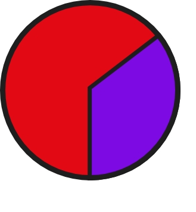

Introduction
This styleguide is a resource for developers, designers and content writers to provide brand consistency across the web. It should help to write consistent and high quality code by using a common language around Dataflix's UI patterns.
This styleguide is a resource for developers, designers and content writers to provide brand consistency across the web. It should help to write consistent and high quality code by using a common language around Dataflix's UI patterns.
Red
| HEX | #E30914 |
| RGB | rgb(227,9,20) |
| CMYK | cmyk(0%,96%,91%,11%) |
Blaulila
| HEX | #7B77F0 |
| RGB | rgb(123,119,240) |
| CMYK | cmyk(49%,50%,0%,6%) |
Darkgrey
| HEX | #2C2C2C |
| RGB | rgb(44,44,44) |
| CMYK | cmyk(0%,0%,0%,83%) |
White
| HEX | #F6F7F2 |
| RGB | rgb(246,247,242) |
| CMYK | cmyk(0%,0%,2%,3%) |
This is Helvetica. Based on the Netflix style guide, Helvetica is the primary font for Dataflix. It is an easy readable and unobtrusive sans serif typeface suitable for screen reading.
| Heading One | 48px(3rem) | Helvetica Bold |
| Heading Two | 32px(2rem) | Helvetica Bold |
| Heading Three | 24px(1.5rem) | Helvetica Bold |
| Body | 16px(1rem) | Helvetica Regular |
| Body bold | 16px(1rem) | Helvetica Bold |
| Buttons & Meta | 16px(1rem) | Helvetica Regular |
Please don’t alter or distort the “Dataflix” logo except to change its sizing while preserving the original proportions. The logo should only be used on RED and DARKGREY and is always positioned in the upper left corner or in the top center.
As the name indicates, Dataflix is all about visualizing data. Therefore, charts are essential. Below are some guidelines for styling various graphs to keep data visualizations uniformly and clear.
If you're using a pie chart, always use a combination of our specified colors. For clearer visibility, you can use a dark border on bright backgrounds and the other way around.
For visualizations with bar charts, the x and y axis always have to be labeled. Do not round up the corners! The bars themselves can either all be in one of our specified colors or mixed up to a maximum of 2. If you choose to mix colors, you have two options:
The BEM (Block, Element, Modifier) methodology is a popular naming convention for
CSS and HTML classes. It consists of a block, which is a top-level abstraction of a component,
one or more elements, which can be refered to as child items from the block, and modifiers.
Modifiers
can
be used to manipulate blocks or elements or to style a specific item differently than the others.
The syntax is as follows:
.block{};
.block--modifier{};
.block__element{};
.block__element--modifier{};
In addition there are two custom prefixes used: See the Pen bGNYJOQ by llenaa (@llenaa) on CodePen.
If you want to read more about BEM follow these links: BEM, Battling with BEM.
Mesurements regarding typography, e.g font-size, letter-spacing or line-height, as well as margin,
padding,
width and height are declared in rem. Rem values are
relative to the root html
element. For example, if the font-size of the root element is 16px, then 1rem equals 16px and 1px
equals 0,0625rem.
In case of precise specification you can use pixels (e.g border width).
SASS should be used for all projects following this styleguide. It is a stylesheet language that’s compiled to CSS and it allows you to use variables, nesting, functions and more, all with a fully CSS-compatible syntax. Sass helps keep large stylesheets well-organized and makes it easy to share design within and across projects. Sass can be downloaded here: Install SASS
Being able to use variables thanks to SASS helps in storing information that is reuseable throughout the stylesheet. The $ symbol is used to create a variable. Here's a basic example:
See the Pen wvBjyxX by dottolodaniela (@dottolodaniela) on CodePen.
Nesting is a great way to organize CSS and make it more readable. Since "normal" CSS doesn't support nesting, SASS helps out with that. Here's a basic example for nesting:
See the Pen zYxPQGo by dottolodaniela (@dottolodaniela) on CodePen.
The open-source bundler Webpack is used to compile all JavaScript modules as well as
various front-end assets like HTML, CSS and images, if the corresponding loaders are included.
Therefore, all components needed for this compilation are stored in the scr-folder. After
processing
the final files will be stored in the dist-folder.
More information about Webpack:
Webpack
The default body text is 16px. For optimum reading length, the paragraph width is capped at 640px.
Klaus is a 2019 Spanish animated Christmas comedy drama film written and directed by Sergio Pablos (in his directorial debut), produced by his company Sergio Pablos Animation Studios (also known as the SPA Studios) with the support of Aniventure and was distributed by Netflix as its first original animated feature. Co-written by Zach Lewis and Jim Mahoney, the film stars the voices of Jason Schwartzman, J. K. Simmons, Rashida Jones, Will Sasso, Neda Margrethe Labba, Sergio Pablos, Norm MacDonald, and Joan Cusack.
When Jesper (Jason Schwartzman) distinguishes himself as the postal academy's worst student, he is stationed on a frozen island above the Arctic Circle, where the feuding locals hardly exchange words let alone letters. Jesper is about to give up when he finds an ally in local teacher Alva (Rashida Jones), and discovers Klaus (Oscar® winner J.K. Simmons), a mysterious carpenter who lives alone in a cabin full of handmade toys. These unlikely friendships return laughter to Smeerensburg, forging a new legacy of generous neighbors, magical lore and stockings hung by the chimney with care. An animated Christmas comedy directed by Despicable Me co-creator Sergio Pablos, KLAUS co-stars Rashida Jones, Jason Schwartzman and JK Simmons. Written by Netflix
Your can choose between different link styles but please keep consistency in using the chosen styling and don't switch between styles.
If a list has a title, make sure it is centered. To define an unordered list use the html tag <ul>, for ordered lists use <ol>.
Basic buttons are used for functionalities like "Submit", "Send" or "Cancel". If a button is inactive, its opacity is set to 40% and the cursor it set to "default".
See the Pen Buttons Basic by llenaa (@llenaa) on CodePen.
Buttons that indicate scrolling, a search function or additional information like instructions or claimers are included in the category "Additional Buttons". Their styling depends on their functionality. The inactive behaviour is the same as for basic buttons.
See the Pen Button Special by llenaa (@llenaa) on CodePen.
Make sure the drop down selection starts scrolling at 5 inputs. The color for the border should be the same as for the buttons you're using and the hover-state effect is always the inverted colors from the inactive state.
See the Pen XWJZyMe by dottolodaniela (@dottolodaniela) on CodePen.
Search inputs should always have the same color for the 2px border as the button color you're using. The icon on the right is just an example, there you can use whatever fits you're website.
See the Pen ZEYozdG by dottolodaniela (@dottolodaniela) on CodePen.
This page layout is for the landing page. The global header always stick to the top. Important information is placed in the middle of the page, semi-important information underneath. Claimers, explanations and all kinds of additional information for the user is positioned in the bottom left corner.

If you use a pie chart to display data, the chart is positioned in the middle of the page.
More information to the chart is on its left and right side.
In case of comparing more than two data groups, the space can be split. So in case of three the two
main boxes
are split into half horizontally. The bottom right box stays empty. In case of four data groups all
four boxes are
filled with data.
The third sample layout is for displaying data in a bar chart. The chart takes up most of the page. Options for toggling the view of the bar chart are placed right above the chart.